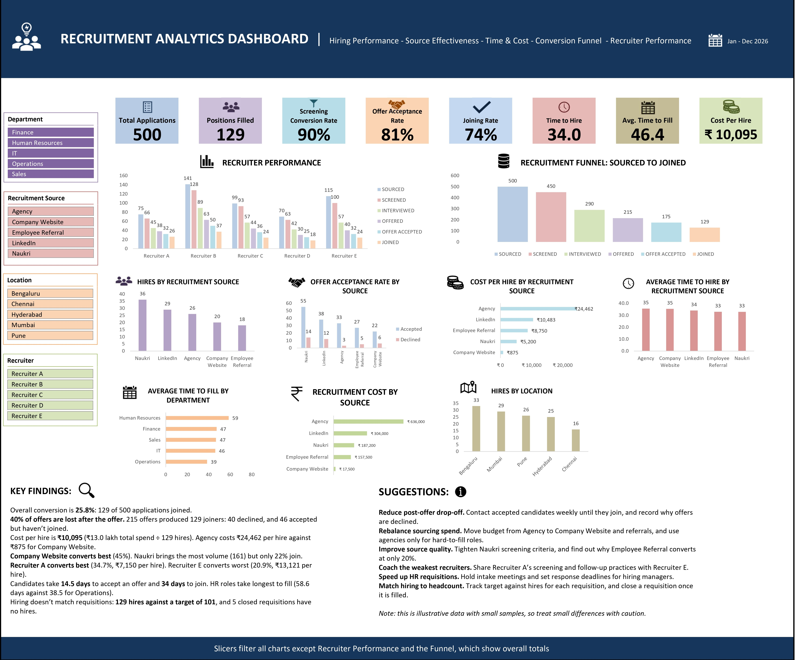

The funnel: 500 applications, 129 joiners
One in four applications ends in a joiner. The largest single loss comes after the offer, not before it.
- Sourced
- Screened
- Interviewed
- Offered
- Offer accepted
- Joined
Percentages are shares of all sourced candidates. Of 215 offers, 40 were declined and 46 were accepted by candidates who never joined.
What the data shows
- 40%
Of offers are lost after the offer. 215 offers produced 129 joiners. Contacting accepted candidates until their joining date is the most direct fix.
- ₹10,095
Cost per hire. Total spend of ₹13.0 lakh divided by 129 hires. Agency costs ₹24,462 per hire, against ₹875 for Company Website.
- 45% vs 22%
Company Website against Naukri. Company Website converts best of all sources. Naukri brings the most volume (161 candidates) but only 22% join.
- 34.7% vs 20.9%
Recruiter A against Recruiter E. Recruiter A converts best at ₹7,150 per hire. Recruiter E converts worst at ₹13,121 per hire.
- 34 days
Time to hire, application to joining. Candidates accept offers after 14.5 days on average. Requisitions take 46.4 days to fill, with HR the slowest (58.6 days) and Operations the fastest (38.5 days).
- 129 vs 101
Hires against target headcount. Hiring did not follow the requisitions: 5 closed requisitions had no hires at all.
Three metrics I corrected
A first version of the dashboard looked right but measured the wrong things. Checking each metric against the raw data changed three numbers.
Cost per hire
The formula averaged cost only for candidates who joined and ignored what was spent on everyone else. Dividing total spend by hires gives ₹10,095.
Time to hire
That figure counted days from application to offer acceptance. The dashboard now measures application to joining, which is 34 days. The 14.5 days is kept as time to accept an offer.
Department filter
Department was filled for only 60 of 500 candidate rows, so using the slicer dropped most of the data. A lookup on each candidate’s own Job ID fixed it.
What I would recommend
- Reduce post-offer drop-off. Contact accepted candidates weekly until they join, and record why offers are declined.
- Rebalance sourcing spend. Move budget from Agency to Company Website and referrals, and use agencies only for hard-to-fill roles.
- Improve source quality. Tighten Naukri screening criteria, and find out why Employee Referral converts at only 20%.
- Coach the weakest recruiters. Share Recruiter A’s screening and follow-up practices with Recruiter E.
- Speed up HR requisitions. Hold intake meetings and set response deadlines for hiring managers.
- Match hiring to headcount. Track target against hires for each requisition, and close a requisition once it is filled.
How I built it
- Structured the candidate and requisition data as Excel Tables.
- Added calculated columns for time to join, joined flag and time to fill, using lookups on Job ID.
- Built PivotTables and PivotCharts for the funnel, recruiters, sources, locations and departments.
- Sorted each chart from highest to lowest and shaded bars from dark to light by rank.
- Added slicers, KPI tiles, and a findings and suggestions panel.
- Audited every metric against the raw data and corrected the three listed above.
Tools
- Excel PivotTables
- PivotCharts
- Slicers
- VLOOKUP and XLOOKUP
- COUNTIFS and SUMIFS
- Structured references
- Calculated fields